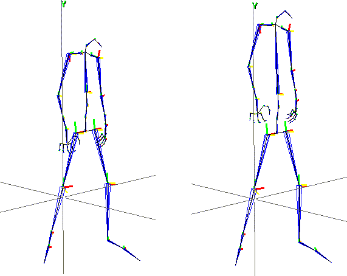
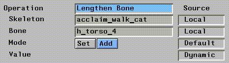
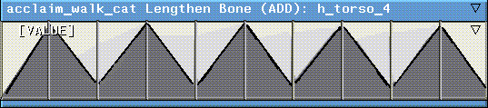

[N-World Contents] [Book Contents] [Prev] [Next] [Index]
Cartoon Effects
This chapter describes how to stretch or scale bones to create cartoonish effects with skeletons in N-Dynamics.

In this Chapter
You'll learn how to:
Animating Changes in Bone Length
Because each bone can be referenced directly, you can use N-Dynamics to animate the change of a bone's length over the course of an animation script.
Suppose for example, that you want a character's arms or torso to change size over time. There are built in functions designed to animate just such an effect.
- Note. If you animate changes in the length of bones that affect motion capture (e.g. the femurs in a walk cycle), you may throw off the motion capture.
To see such an animation:
1. Load the following script:
/usr/local/ngc/demo/scripts/lengthen-bone
- There are four channels in the script:
- Notice that the Scale Bone channel is turned off when the script is read in; we'll turn it on after we've animated the script once so that you can see its effect.
2. (CLICK-L) on the Animate button in the N-Dynamics window.
- The cat walks from left to right across the N-Geometry window.
3. (CLICK-M) on the "Lengthen Bone" channel.

Figure 9.1 Lengthen Bone operation properties
- To animate the lengthening of a bone, you need to specify:
4. (CLICK-L) on Do It after you've reviewed the parameters for this channel.
5. (CLICK-L) on the Lengthen Bone channel, then on the curve channel under it.
- Note that we inserted a number of cues in the channel.

Figure 9.2 Cues for Lengthen Bone channel
- The cues represent the value used to lengthen the bone at that point in the script (using either the Set or Add mode described earlier).
- (If you want to modify the values of the cues in the channel, you can either (SHIFT-L) on the cue itself, or (CLICK-R) on the curve channel and select the Edit all Cue Values operation.)
6. Move the mouse over the "Lengthen Bone" channel and press "a" on the keyboard.
- This makes the Lengthen Bone channel active.
7. (CLICK-L) on the Animate button in N-Dynamics again.
- This time the cat walks across the screen, but the torso bone stretches up and down to follow the cue values in the Lengthen Bone channel.
- (It may be easier for you to see the actual change being made to the skeleton if you (CLICK-M) on the Update Skeleton channel and turn Skins>Update? to No.)

Figure 9.3 Left, original animation; right, after animating change in bone length of torso bone
- Of course, any skins attached to the bone stretch too; this is where you might want to create soft parts based on the change in a bone's length.
Animating Changes in Bone Scale
Animating a change in bone length lets you set an absolute value for a bone or group or bones at each frame of the animation.
If you want to animate a change in a bone's scale (that is, specify a multiplier for the default bone length at each frame), you can do that too.
Try loading the following script:
/usr/local/ngc/demo/scripts/scale-bone
This script is very similar to the lengthen-bone script we animated in the previous section, with one exception-if you (CLICK-M) on the Scale Bone channel, you can see that there is an additional option for how to use the value in the curve channel for the operation:
- Note. If you use the multiply option, you should be careful when defining cue values-it's easy to specify a multiplier that would scale a bone to an amazing degree.
If you look at the cue values in the curve channel of the Scale Bone channel, you can see that some of the cues specify a value of 2.0, while others specify a value of 4.0; this is why the cat stretches more at certain points in the script than in others.
Congratulations!
You've now learned to how to animate the stretching of bones (and skins if attached!) on a character.
[N-World Contents] [Book Contents] [Prev] [Next] [Index]
 Another fine product from Nichimen documentation!
Another fine product from Nichimen documentation!
Copyright © 1996, Nichimen Graphics Corporation. All rights
reserved.